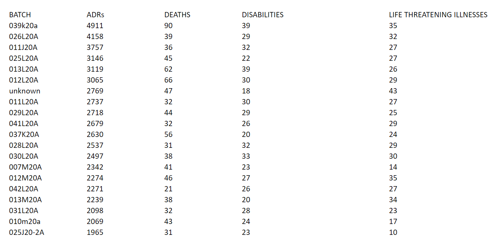
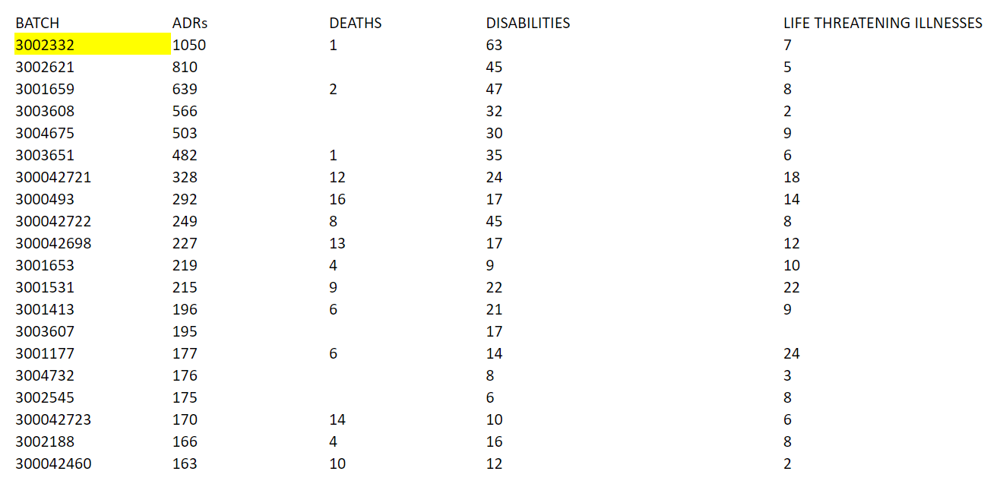
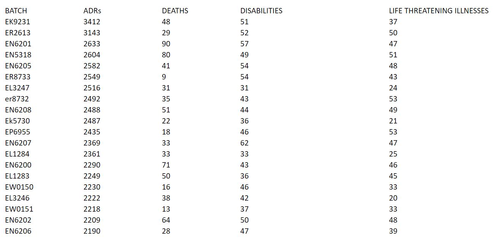
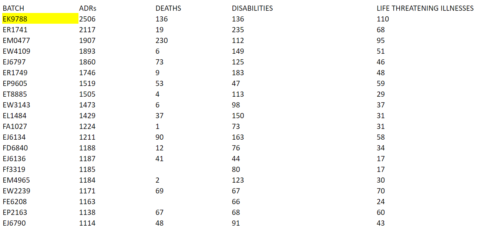

Geographical Differences
home | Booster Warnings by Month | Moderna | Pfizer | Janssen | Moderna (outside USA) | Pfizer (outside USA) | Janssen (outside USA) | Severe | Symptom | Treatment | Children | Clusters | All or Nothing | Time till onset | Gender | Geography | States | Causality | Japan | Sweden | Video Library | Case Reports | Lot Sizes | Lot Expiry Dates | Whistle Blowers | Data Cleaning | Background | Download Source Code | Donate
If this site is slow loading that's because over 1 million people are accessing it right now. Please use auxillary site HowBadisMyBatch.com which has been set up to cope with this overload. Thankyou.
Moderna vaccines appear to have different effects outside of the USA compared to in the USA. Please look at the two charts below.
Chart 1 shows the top 20 Moderna lots for adverse effects in the USA. These lots are associated with equal numbers of deaths and disabilities following vaccination.
Chart 1 : Moderna in USA

Chart 2 shows the top 20 Moderna lots for adverse effects OUTSIDE of the USA. There is a striking difference. These lots are associated with low deaths, but high disability.
Chart 2 : Moderna outside USA

Sudden death has been avoided, but has been replaced with chronic disabling conditions; short term trauma has been replaced with long term disability.
A similar observation applies to Pfizer vaccines.
Chart 3 shows the top 20 Pfizer lots for adverse effects in the USA. These lots are associated with equal numbers of deaths and disabilities following vaccination.
Chart 3 : Pfizer in USA

Chart 4 shows the top Pfizer lots for adverse effects OUTSIDE of the USA. There seems to be a shift away from death towards disability.
Chart 4 : Pfizer outside USA

It is doubtful that these differences are due to demography. Pharma appear to be exporting disability ! Chronic illness certainly provides a better income stream compared to sudden death. And wealthy European nations can afford the medication.
We should take into account that the figures are actually worse than at first appears. Allow me to explain. In the USA the lot 039K20A is associated with 39 disabilities out of 4911. So 0.8% of the reports are disabilities. Outside of the USA, Moderna batch 3002332 is associated with 63 disabilities out of 1050 - so 6% of the reports are disabilities
So in actual fact, the % of reports with an outcome of disability is 10 x greater outside of the USA.